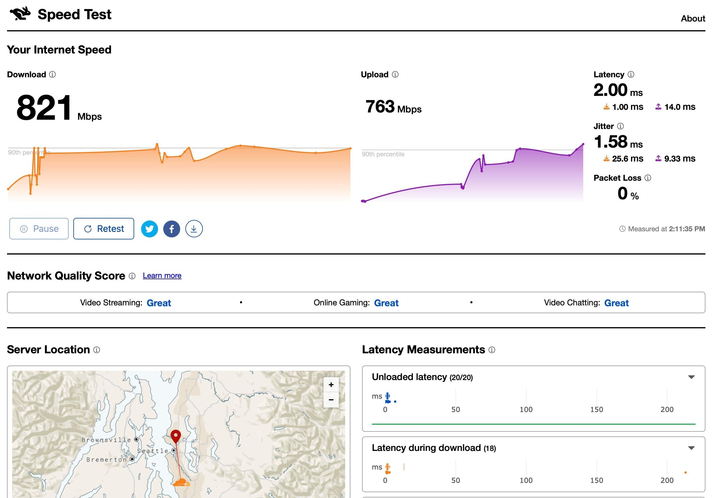
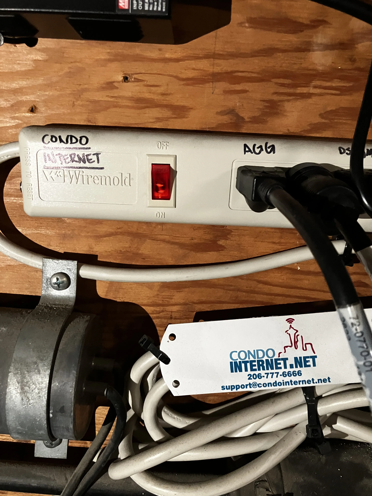

Leaving Xfinity for Astound
I week ago, I switched my internet services provider (ISP) from Xfinity to Astound. I had been getting internet service from Xfinity since I moved into my condo in late 2020. On paper Xfinity offers impressive service at my address. I was paying about $100 a month for 1200 Mbps down and 200 Mbps up. Sadly, I never really got that level of service. Typically, I’d see speeds of around 30 to 150 Mbps down at peak times and when under heavy load, like downloading a game from Steam, my connection would drop repeatedly. This was disappointing but acceptable as 5G service was the only alternative in my specific mid-1980’s-built building near downtown Seattle.
About six months ago I started getting mailers from Verizon and Astound for home internet service. At first, I ignored them as I had dealt with Xfinity for so long, but under pressure from my enthusiastically anti-Xfinity brother I scheduled an install with Astound. On paper this was going to be a big hit as Astound was only offering 100 Mbps down and 100 Mbps up. But I was hoping we could find a way to do better.
Two weeks later at around noon the Astound installer arrived and went to work. First, they tried to find a lose ethernet cable coming out from one of the walls or hiding behind one of the coaxial cable plates, to no avail. Then they called the corporate to verify that they really did offer service in my building, before finally calling out a master tech to take over the install. With two installers on site, they swapped the face plate on one of the unused phone outlets to an RJ45 faceplate and then in the networking closet in the basement parking garage plugged the unused phone line from my unit into their managed switch which as it turned out had fiber running into it from outside the building.
This switch was from the mid 2000’s and isn’t made anymore. Similarly, the tech told me Astound doesn’t install or service more than a couple dozen buildings like my own. As a validation of that choice, I learned that I am now their only customer in the building. At some point in the last decade all the other customers who had been using their service in my building switched to Xfinity and so their infrastructure had sat dormant next to my car.

Well now I am the only person in my building with an unshared connection to the internet. This is good for my neighbors too as they are no longer in competition with me for the building’s limited Xfinity bandwidth. But my service from Astound really is only 100 Mbps down. It stings a little, but the reality of my situation is that it’s had no impact on my day-to-day internet usage. I can’t tell the difference between except in terms of reliability under load where I no longer see my connection drop while downloading games. Oh, and I’m only paying $30 a month for service.
For now, I’m calling that an Astounding win.